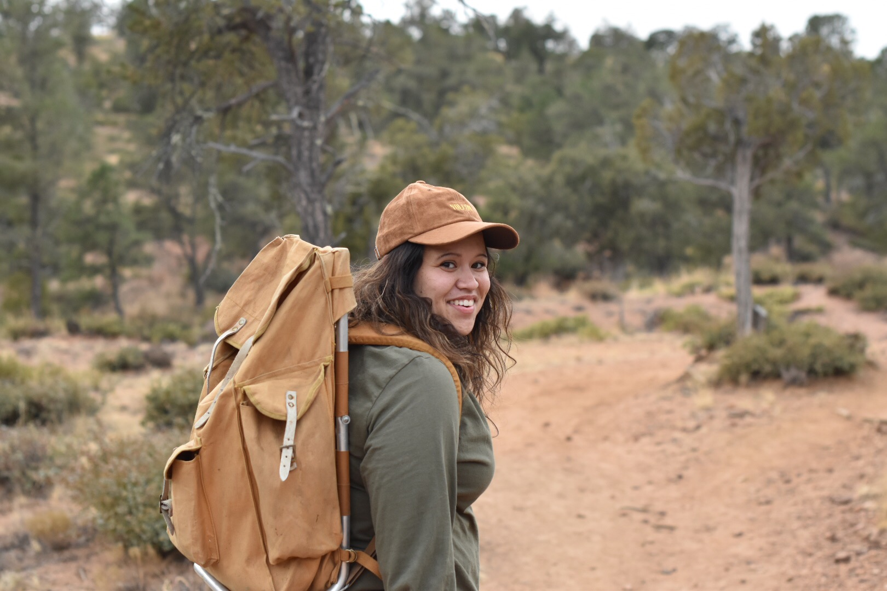

About Me

Welcome! Thanks for visiting I'm Kylee and I hope you enjoy it here. A few things about me,I was born and raised in Arizona. After High School I decided I has done with the desert and moved to Mississippi to go to College. After a year I decided that I pefer the "dry heat" over the humidity, I fell in love with the south but I missed my family and friends.
I have worked in the health field for 5+ years. In that time I was able to work at a hospital, Laboratory, Surgery Center, Pain Clinic's and Rehabilition Centers. I was able to set up and implement new systems in clinics. I was part of the three Laboratory start ups in Arizona and California. And the last and most recent venture is Telemedicine where I see patients remotely and asses their condition and risk.
Fun things about me! I love to travel fortunatly this year I was able to go to many places, my favorite places this year were Nashville ( loved it so much I went twice in two months) and Alaska I fished on the Kenai River, Saw the Northern Lights and was able to see Denali's peak! I have 3 cats Ricardo, Lucy and Skeeter. I love music, I love all kinds I have a collections of 300+ records mostly old twangy country the older the better, cant get enough of the crackle. I am novice Banjo player but I try. Thats me Kylee!